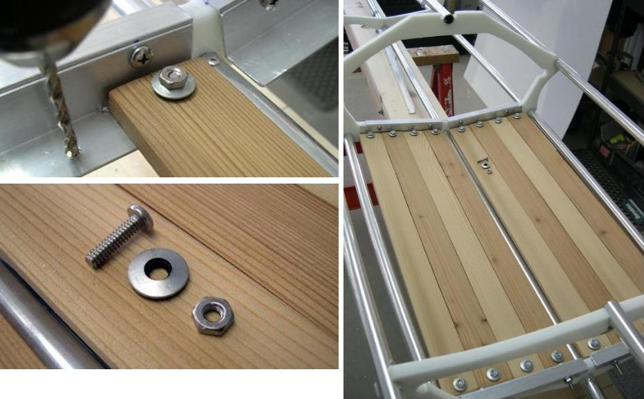

| Wood Slat Floor (5 of 7) | Menu Previous Page Next Page |
|
 Attaching Floor Slats Center and drill holes on each end of the slats. Use 3/4" x 10/24 stainless machine screws to attach the slats to the aluminum angle. The slats serve as a guide for drilling the aluminum. Use flat washers and 10/24 nuts on the top of the slats. Neoprene washers are shown. Lock washers or nylon locking nuts are recommended. |
|